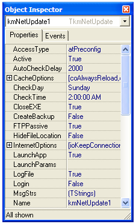

Features
The NetUpdater component enables Delphi developers to easily incorporate a
powerful, automatic update feature to their own software. Net Updater provides
a flexible, easy solution to manage all your update requirements.
Built using some of the same functions found in Net Update, this Delphi component
supports all common, trusted protocols (HTTP, HTTPS, FTP and LAN), automatic proxy
detection, interactive and silent mode, and much more.
 Industry Standard Protocols Industry Standard Protocols

NetUpdater uses safe, trusted protocols for HTTP, HTTPS, FTP and LAN updates.
These are the same protocols used today in Microsoft's Internet
Explorer. So you know it works.
Flexible Version Analysis
Update status is determined by either version number or date-time
stamp. Typically, a complete update to the whole application would be
controlled using the version number, and application patches or
modifications would be controlled using date-time stamps. Additionally,
updated miscellaneous files can be controlled by file size - only files
where the size differs would be updated.
Interactive or Silent Modes
Flexible running modes ensure update notices are delivered and provide a
choice on how to apply to update. The normal, interactive mode prompts the
end user all along the download and installation path. You can enforce
corporate software standards by selecting either Silent or Hidden modes.
Silent mode shows the end user exactly what is being downloaded and
installed, but does not allow him to cancel the update. In Hidden mode,
all download and update operations are carried out in the background,
entirely hidden from the end user.
Choice of Update Method
NetUpdater provides the developer with a choice of how the updates are
to be delivered and installed. NetUpdater can download and install all
required files itself, or download and automatically run a third
party installer (Inno Setup by Jordan Russell is recommended, but any third
party installer will work), or the user can be directed to a URL for more
information and download.
Schedule Update Check
A check for updates can be scheduled to occur when the NetUpdater application
starts, or at a certain time of the day, or on a certain day of the week. In
situations where consumers may be using your kiosk software in a retail environment, you
wouldn't want to schedule an update in the middle of the day. Preferably, you would
schedule the update to occur in the middle of the night, say around 2:00 am,
in order not to disturb ongoing business processes.
The advanced feature set of NetUpdater also includes:
 User-friendly update manager using Wizard interface
Context sensitive help
Not a single line of code required
No dependencies on DLL, COM or other runtime files
Firewall friendly
Choice of update method - self update, external setup file or redirect to URL
Flexible update detection based on version number or time stamp
Automatic proxy detection with automatic or manual login
Silent, hidden or interactive runtime modes
Uses trusted, safe protocols: HTTP, HTTPS, FTP and LAN
Check for updates based on flexible schedule
Create log file to monitor installation process and help with debugging
Optionally hide source and destination file locations from end user
Automatically close target application if open
Automatically launch target application after update or check
Support for target application command-line parameters
Support for external setup file command-line parameters
Create backup of all replaced files automatically
Create required directories on-the-fly automatically
Selectable display of messages
Full control over HTTP Internet options
Full control over cache options
Set thread priority to low, normal or high
Ability to customize or provide translations to all messages
Install to any client directory
Use any of eight pre-defined directory locations, ie: windows, system or program files directories
Provide custom text with every update presented to end user
Monitor external setup application exit code for completion
Use any third party external setup application
Pre-determine how to handle miscellaneous files User-friendly update manager using Wizard interface
Context sensitive help
Not a single line of code required
No dependencies on DLL, COM or other runtime files
Firewall friendly
Choice of update method - self update, external setup file or redirect to URL
Flexible update detection based on version number or time stamp
Automatic proxy detection with automatic or manual login
Silent, hidden or interactive runtime modes
Uses trusted, safe protocols: HTTP, HTTPS, FTP and LAN
Check for updates based on flexible schedule
Create log file to monitor installation process and help with debugging
Optionally hide source and destination file locations from end user
Automatically close target application if open
Automatically launch target application after update or check
Support for target application command-line parameters
Support for external setup file command-line parameters
Create backup of all replaced files automatically
Create required directories on-the-fly automatically
Selectable display of messages
Full control over HTTP Internet options
Full control over cache options
Set thread priority to low, normal or high
Ability to customize or provide translations to all messages
Install to any client directory
Use any of eight pre-defined directory locations, ie: windows, system or program files directories
Provide custom text with every update presented to end user
Monitor external setup application exit code for completion
Use any third party external setup application
Pre-determine how to handle miscellaneous files
The developers at KidMoses are confident that NetUpdater will meet all your
application update requirements. However, if you do have any questions, or
require assistance with integration into your own systems, please feel
free to contact us at
support@kidmoses.com.
We will be glad to answer all your questions, or provide a quote for any
customization you may require.
|